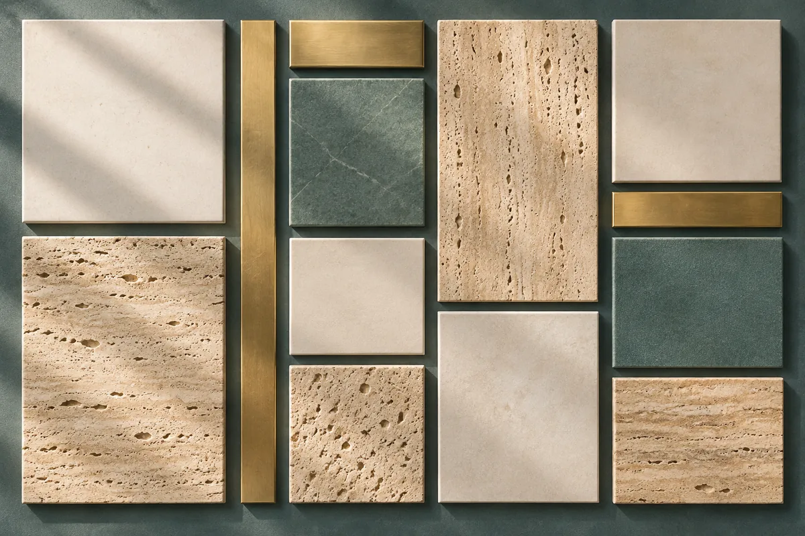

Typography, Color Spaces & Vector Craft
Structuring Multi-Column Editorial Layouts That Scale Cleanly to 320px

An editorial layout can fit its cards at 320 px and still fail when a long caption widens the page or a sticky header covers a heading. Use CSS Grid to size cards from the space they actually have, Flexbox to wrap reading controls, and local scrolling for wide reference material. The test layout leaves a 288 px grid and zero page-level horizontal overflow.
Scroll horizontally or focus the diagram and use the arrow keys to see all labels.
Measure the card grid where it actually sits
Start with the narrowest reading surface in the EMFLS Studio Journal layout. In a 320 px viewport with 16 px gutters, the grid gets 288 px. A card with 16 px padding on each side leaves 256 px for the headline and caption, before borders. Put a real headline, a landscape photograph, and the longest metadata label in that card. Check how they wrap before choosing a track minimum. A card that fits its grid line can still be hard to read if the label takes half the row or the caption falls into a stack of single words.
Use the grid’s content width for the arithmetic. A 600 px viewport might seem wide enough for two cards, but an inset panel that takes another 48 px from each side leaves 472 px after the page gutters. Two 240 px tracks and a 16 px gap need 496 px. The same grid should therefore show one column in the panel and two on the open page. With a capped page shell, measure the shell after padding. With a classic scrollbar, use the available layout width reported by the browser.
Let the available width set the column count
Give the card collection a fluid minimum with min(100%, 240px) inside minmax(). At 288 px, the minimum is 240 px and the single occupied track grows to fill the grid. If a nested layout leaves 216 px, the minimum drops to 216 px. This clamp matters anywhere a card collection can sit inside a panel or a margin-heavy template. Keep cards in editorial source order so the sequence stays intact as rows reflow.
body { margin: 0; }
.journal-shell {
box-sizing: border-box;
max-inline-size: 1120px;
margin-inline: auto;
padding-inline: 16px;
}
.editorial-grid {
display: grid;
gap: 16px;
grid-template-columns: repeat(auto-fit, minmax(min(100%, 240px), 1fr));
}
.editorial-grid > * { min-inline-size: 0; }With enough cards, an additional track fits when the inner width reaches the sum of the track minimums and intervening gaps. Three tracks need 720 px plus 32 px of gaps. At 751 px, two tracks share the available space at 367.5 px apiece. At 752 px, three tracks fit at 240 px apiece. These are thresholds for the example shell under the stated assumptions. The CSS Grid auto-repeat rules define how repetition accounts for gaps and available space.
| Layout width | Grid width | Columns | Track width |
|---|---|---|---|
| 320 px | 288 px | 1 | 288 px |
| 527 px | 495 px | 1 | 495 px |
| 528 px | 496 px | 2 | 240 px |
| 783 px | 751 px | 2 | 367.5 px |
| 784 px | 752 px | 3 | 240 px |
Check a lightly populated shelf as well. At 752 px with two cards, auto-fit collapses the empty third track and its adjoining gap, so the two occupied tracks become 368 px each. auto-fill keeps the third slot if the layout needs that space reserved for an incoming card. Once three cards occupy the first row, a fourth card alone on the next row remains one track wide. Track occupancy applies across the grid as a whole.
Keep the reading header in the page’s scroll flow
Put the sticky header directly inside the shell, before the content that should scroll under it. The shell must extend through the reading area. If a short wrapper encloses only the header, the header runs out of room to stick. Use Flexbox for the header controls and allow those controls to wrap. At 288 px of usable width, a 180 px label and a 112 px navigation group need 304 px with a 12 px gap. The group should move to another line, with its own links able to wrap if they exceed the available width.
.reading-header {
position: sticky;
inset-block-start: 0;
z-index: 1;
background: #f8fafc;
}
.reading-bar, .reading-links {
display: flex;
flex-wrap: wrap;
align-items: baseline;
gap: 8px 12px;
}
.reading-bar > * { min-inline-size: 0; }
.reading-bar { overflow-wrap: anywhere; }
.journal-shell [id] { scroll-margin-block-start: var(--reading-clearance, 96px); }Measure clearance after fonts load and with the header at its tallest expected wrap. If the occupied height is 84 px, a 96 px offset leaves 12 px between the pinned bar and a heading reached by a fragment link. That offset is a measured allowance. Update it if longer labels, larger text, or additional controls increase header height. Test keyboard focus near the pinned edge too. On a short screen where the header consumes too much reading space, use a height media query to return it to static positioning and adjust the allowance.
If the header scrolls away before the end of the article, inspect its containing block and the computed overflow of its ancestors. Sticky positioning uses the nearest scrollport and stays within its containing block. An ancestor with overflow-x: hidden and an otherwise visible vertical axis can compute vertical overflow to auto, changing which scrollport the header follows. Move the overflow rule to the element that actually needs it. CSS sticky positioning and overflow axis rules explain both constraints.
Contain wide content at its source
When the page can pan sideways, inspect the element extending past the grid edge. For a 900 px image in a 256 px card content box, limit its inline size to 100% and keep its block size automatic. Reset the inline margins on card figures if default margins eat into that box. If a long source URL widens a nested flex row, allow the text flex item to shrink with min-inline-size: 0 and apply overflow-wrap: anywhere to the text. The latter adds break opportunities that also count toward min-content sizing. CSS line wrapping rules
.editorial-grid figure { margin-inline: 0; }
.editorial-grid img {
display: block;
max-inline-size: 100%;
block-size: auto;
}
.card-copy { min-inline-size: 0; overflow-wrap: anywhere; }
.table-wrap, .journal-shell pre {
min-inline-size: 0;
max-inline-size: 100%;
overflow-x: auto;
}Keep horizontal scrolling local to material that depends on alignment. If a comparison table needs 420 px to keep its measures legible, a 288 px wrapper gives it 132 px of horizontal travel. Put any required minimum on the table itself and let the wrapper scroll. Preserve the caption and the association between headers and values. Give a keyboard-focusable scroll region an accessible name and a visible focus indicator. Use the same local containment for a code sample whose indentation or line boundaries carry meaning.
Verify the layout at seams and under pressure
Run a narrow-width pass with the same content and fonts used in production. Use responsive mode to set the viewport in CSS pixels and confirm the actual layout width before comparing it with the table. On a phone, the document should declare a device-width viewport with an initial scale of 1. Otherwise the browser may lay out a wider page and scale it down. Read the grid overlay for column count and the box model for track width. When an edge case fails, record the viewport, grid width, and offending element together. That record helps the next editor reproduce the failure even after the layout moves into a different shell.
- At 320 px, confirm one 288 px track in the example shell. Check that the document root’s
scrollWidthequals itsclientWidthand that the right edge of the card is visible. - Check 527 and 528 px, then 783 and 784 px with at least three cards. Compare both sides of each threshold, then remove one card at 784 px and verify the two 368 px tracks.
- Scroll from the first paragraph to the last. Follow a heading link, then tab through controls near the top edge. Confirm the header stays pinned through the reading area and the target and focus indicator remain visible.
- Repeat with a long URL, an oversized image, a wide code line, and larger text. Confirm that text and media fit, the table and code can scroll independently, and the page still reads in source order.